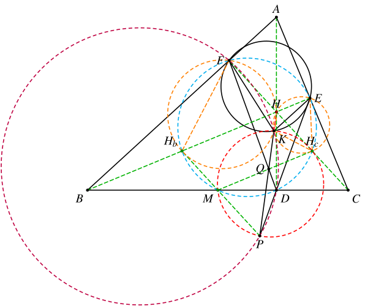
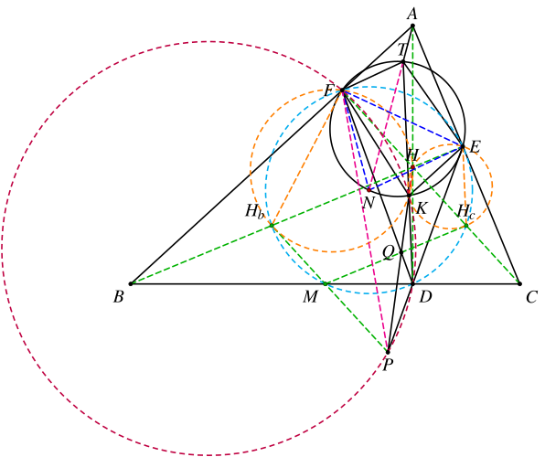
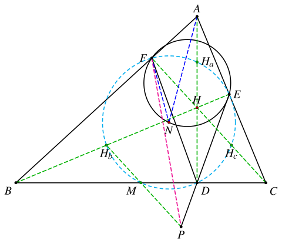

1. 题目
如图，在锐角 △ABC 中，AB>AC，D、E、F 分别是 A、B、C 在对应边上的投影。设 BF 的中垂线与 DE 交于点 P，CE 的中垂线与 DF 交于点 Q。设 K 是直线 PQ 上一点使得 ∠PKE=∠PKF。设 DK 交 △KEF 的外接圆与另一点 T，求证：∠ATE=∠ATF。
2. 分析
设 H 是 △ABC 的垂心，N 是 △ABC 的九点圆圆心。
这个题有三个重要的观察点：
- H、P、Q 共线；
- 点 K 满足 ∠FKH=∠HKE=∠FDE，从而 N∈⊙(KEF)；
- A、T、N 共线。
第一个结论在做出图来之后，是比较容易看出来的，可以直接用梅涅劳斯定理进行证明。
在证明第一个结论的时候，会用到 BC、BH 和 CH 的中点，结合 D、E、F 自然就联想到九点圆。画出九点圆就会发现，其圆心就在 △KEF 的外接圆上。
从而我们可以得出
∠FKH=21∠FNE=∠FHbH∠HKE=21∠FNE=∠HHcE
因此 F、Hb、K、H 共圆，E、Hc、K、H 共圆，可知点 K 是完全四边形 FHbEHc 的密克点。
要证明这个结论，我们可以使用同一法构造点 K。可以直接用密克点来构造，也可以用其它的圆的交点来构造，关键是构造点 K 之后能够证明其在直线 PQ 上。
最后一个结论不是很好直接证明，不过此时的结论可以转换成角相等的结论，而且可以完全消去点 K，因此我们可以考虑把它算出来。可以尝试三角法或复数法。
3. 解答
3.1. 结论一的证明
如图，设 CF 与 DE 交于点 Z。考虑 △FZD，要证明 H、P、Q 共线，只需证
QDFQ⋅PZDP⋅HFZH=1
设 CE 的中垂线分别与 AB、BC、CF 交于 L、M、Hc，则 M 是 BC 中点，Hc 是 CH 中点。考虑 △FBD，有
QDFQ⋅MBDM⋅LFBL=1
注意到
PZDP=MCDM=MBDM
以及
LFBL=HcFHHc
因此只需证明
HFZH=HcFHHc
即可。
注意到 △ABC 的垂心 H 是其垂足三角形 DEF 的内心，A、B、C 是 △DEF 的旁心，因此
(FZ;CH)=−1
由 Hc 是 CH 中点可知
HcH2=HcZ⋅HcF
故
HcFHcH=HcHHcZ=HcF−HcHHcH−HcZ=HFHZ
结论得证。
3.2. 结论二的证明

如图，设 K′ 为 ⊙(HbHF) 和 ⊙(PDF) 的第二个交点，则由
∡FK′H=∡FHbH=∡FDE=∡FDP=∡FK′P
可知 K′ 在直线 PH 上。由
PQ⋅QK′=DQ⋅QF=MQ⋅QHc
可知 P、M、K′、Hc 共圆。因此
∡HK′Hc=∡PK′Hc=∡PMHc=∡PHbE=∡CHE=∡HEHc
可得 H、K′、Hc、E 共圆。故
∡HK′E=∡HHcE=∡FDE=∡FK′H
因此 K′ 与 K 重合。
3.3. 结论三的证明（复数法）

由结论二可知，
∡FKE=∡FKH+∡HKE=∡FHbH+∡HHcE=2∡FDE=∡FNE
因此点 N 在 ⊙(KEF) 上。
故
∡FTN=∡FEN=∡NFE=∡NTE
要证明 ∠ATE=∠ATF，只需证 A、T、N 共线，即 ∡ANF=∡TNF 即可。其中
∡TNF=∡TKF=∡DKF=∡DPF=∡EPF
因此只需证 ∡ANF=∡EPF。
以 △ABC 的外接圆为单位圆建立复平面，设点 A、B、C、D、E、F、H、Hb、Hc、M、N、P 对应的复数依次为 a、b、c、d、e、f、h、hb、hc、m、n、p。则
hndefhbhcm=a+b+c=21h=21(a+b+c)=21(a+b+c−aˉbc)=21(a+b+c−abˉc)=21(a+b+c−abcˉ)=21(b+h)=21(a+2b+c)=21(c+h)=21(a+b+2c)=21(b+c)
设
p=λ⋅hb+(1−λ)⋅m=λ⋅21(a+2b+c)+(1−λ)⋅21(b+c)=21λ(a+b)+21(b+c)
以及
p=μ⋅d+(1−μ)⋅e=μ⋅21(a+b+c−aˉbc)+(1−μ)⋅21(a+b+c−abˉc)=21μ(abˉc−aˉbc)+21(a+b+c−abˉc)
可得
λ(a+b)−μ(abˉ−aˉb)c=a−abˉc
其中 λ∈R，μ∈R。
对上面的式子取共轭可得
λ(aˉ+bˉ)−μ(aˉb−abˉ)=aˉ−aˉbcˉ
联立可解得
μ=−(abˉ−aˉb)(cˉ+aˉbˉc)(b−c)(bˉ2+aˉcˉ)
要证明 ∡ANF=∡EPF，只需证
e−pf−p÷a−nf−n∈R
即可。
其中
f−pe−pf−na−n=−21abcˉ+21μaˉbc+21(1−μ)abˉc=21[a(bˉc−bcˉ)+μ(aˉb−abˉ)c]=e−[μ⋅d+(1−μ)⋅e]=μ(e−d)=21μ(aˉb−abˉ)c=−21abcˉ=21(a−b−c)
因此
e−pf−p÷a−nf−n=μ(aˉb−abˉ)ca(bˉc−bcˉ)+μ(aˉb−abˉ)c⋅−abcˉa−b−c=(μ(aˉb−abˉ)ca(bˉc−bcˉ)+1)⋅abcˉb+c−a
其中
μ(aˉb−abˉ)ca(bˉc−bcˉ)=(b−c)(bˉ2+aˉcˉ)ca(bˉc−bcˉ)(cˉ+aˉbˉc)=−c2(ac+b2)a(b+c)(ab+c2)
代入可得
e−pf−p÷a−nf−n=c2(ac+b2)c2(ac+b2)−a(b+c)(ab+c2)⋅abcˉb+c−a=abc(ac+b2)b(a+c)(bc−ab−ac)(b+c−a)=−ac+b2b(a+c)⋅(bˉ+cˉ−aˉ)(b+c−a)
注意到
(ac+b2b(a+c))=ac1+b21b1(a1+c1)=b2+acb(c+a)(i)
因此
(e−pf−p÷a−nf−n)=e−pf−p÷a−nf−n
可知
e−pf−p÷a−nf−n∈R
命题得证。
3.4. 结论一的另一个证明（不使用调和点列）
注意到 HHbMHc 是平行四边形，只需证明
PHbPM=HHbQM⟸PHbPM=HcMQM
考虑直线 DE 和 △BHbM，由梅涅劳斯定理可知，
EHbBE⋅PMHbP⋅DBMD=1
因此
PHbPM=BDBE⋅EHbMD
注意到 BE⋅BHb=BM⋅BD，因此
PHbPM=BHbBM⋅EHbMD
同理，考虑直线 DF 和 △CHcM，有
FHcCF⋅QMHcQ⋅DCMD=1
因此
HcQQM=CDCF⋅FHcMD
注意到 CF⋅CHc=CD⋅CM，因此
HcQQM⟹HcMQM=CHcCM⋅FHcMD=CHc⋅FHc+CM⋅MDCM⋅MD
所以，要证明的结论等价于
EHb⋅BHbBM⋅MD⟺EHb⋅BHb=CHc⋅FHc+CM⋅MDCM⋅MD=CHc⋅FHc+CM⋅MD
其中
EHb⋅BHb=(BE−BHb)⋅BHb=BE⋅BHb−BHb2=BM⋅BD−41BH2
以及
FHc⋅CHc=(CF−FHc)⋅CHc=CF⋅CHc−CHc2=CM⋅CD−41CH2
因此只需证
⟺⟺BM⋅BD−41BH2=CM⋅MD+CM⋅CD−41CH2BM⋅(BD−MD−CD)=41(BH2−CH2)BM⋅DM=41(BH2−CH2)
由 DH⊥BC 可知
BH2−CH2=BD2−CD2=(BD+CD)(BD−CD)=BC⋅2DM=2BM⋅2DM=4BM⋅DM
结论得证。
3.5. 结论二的另一个证明（使用完全四边形）
如图，设 S=FHb∩EHc，R=EF∩HbHc。对 HbMHcEDF 应用帕斯卡定理可知 P、Q、S 共线。
考虑完全四边形 FHbEHc 的密克点 K′，由 FHbEHc 四点共圆可知 K′ 是 R 关于 ⊙N 的反演点。因此 K′ 在点 R 关于 ⊙N 的极线 SH 上。故
∠FKH=∠FHbH=∠FDE=∠FHcE=∠HKE
可得 ∠PKF=∠PKE，因此 K′ 与 K 重合。
3.6. 另一种复平面的构造方法

如图，以 △ABC 的九点圆为单位圆建立复平面，则 n=0。注意到 H 是 △DEF 的内心，因此存在单位圆上的 u、v、w 使得
d=u2,e=v2,f=w2ha=−vw,hb=−wu,hc=−uv
于是
hm=−(uv+vw+wu)=vw
因此
a=2ha−h=uv−vw+wu=uvw(w+v−u)
设
p=λu2+(1−λ)v2=λ(u2−v2)+v2
以及
p=μ(−wu)+(1−μ)vw=−μ(wu+vw)+vw
因此
λ(u+v)(u−v)+μ(u+v)w=v(w−v)
其中 λ∈R，μ∈R。
对上式取共轭可得
λ(uˉ+vˉ)(uˉ−vˉ)+μ(uˉ+vˉ)wˉ=vˉ(wˉ−vˉ)
联立可解得
λ=(u+v)(u−v)(uv+w2)u(w−v)(wu+v2)
因此
e−pf−p⋅f−na−n=λ(v2−u2)w2−v2−λ(u2−v2)⋅fa=[λ(v2−u2)w2−v2+1]⋅fa=[−(u+v)(u−v)(w+v)(w−v)⋅u(w−v)(wu+v2)(u+v)(u−v)(uv+w2)+1]⋅fa=u(uw+v2)u(uw+v2)−(w+v)(uv+w2)⋅w2uvw(w+v−u)=−uw+v2(u+w)v(w+v−u)(w+v−u)
类似 (i) 式可知
e−pf−p⋅f−na−n∈R
结论得证。